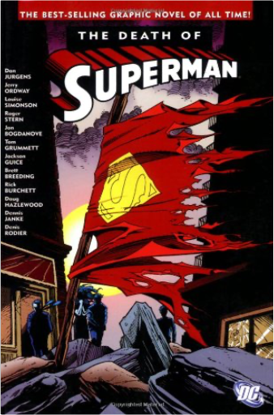

atlas jeunesse - les animauxatlas jeunsesse atlas jeunesse - les animauxatlas jeunsesse  A travers 15 cartes de géographie hautes en couleurs, les enfants découvriront le monde fabuleux des animaux. Grâce à des illustrations détaillés, chaque double-page permet de découvrir les espèces animales des différents pays et continents. DIMENSIONS : 25,5 cm × 32,0 cm × 1,0 cm NB. DE PAGES : 45 pages EDITEUR : NGV EAN : 4007148013028 the death of supermandan jurgens The Death of Superman was a 1992 stunt that turned out to be DC's bestselling Superman comic ever. The massive 11-issue crossover among four different series (Superman, Superman: The Man of Steel, Action Comics, and Justice League of America) introduces an unstoppable alien named Doomsday who creates a path of destruction on his way to the heart of Metropolis and whom Superman must stop at any cost. It's of interest as a milestone of the Superman mythos (though of course the outcome didn't last), but casual fans might be underwhelmed by the unfamiliar villain and the unfamiliar Justice League (with Booster Gold, Blue Beetle, and other minor heroes rather than the traditional lineup), the drawn-out story (by Dan Jurgens, Jerry Ordway, Louise Simonson, and Roger Stern), and the ordinary art (by Jurgens, Jon Bogadanove, Tom Grummett, and Jackson Guice). —David Horiuchi |


 Made with Delicious Library
Made with Delicious LibraryNancy, State zipflap congrotus delicious library Thomas, Julien